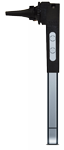
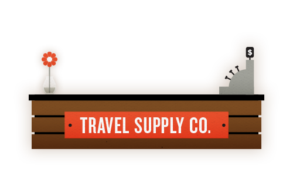
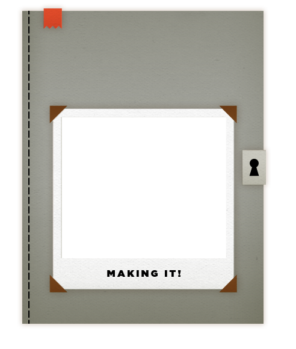

Exploring Mobile Health Apps
Let's take a journey through the explosion of health and medical apps — and see how they cater to every moment of our lives.
Scroll Down
This is
Marie.
Marie's
ear hurts.
Marie's
mom takes
her to the
doctor.
Scroll down to
learn more from
a pediatrician
who uses
CellScope Oto.
SECOND PHASE.
App: Cellscope Oto
When Marie's doctor checks inside her ear
using an iPhone, Marie isn't scared.
Marie has been around smartphones
since she was born.
Marie's doctor tells her it's like
making a movie of her ear.
Marie thinks that sounds fun.
This will appear on top of the person


